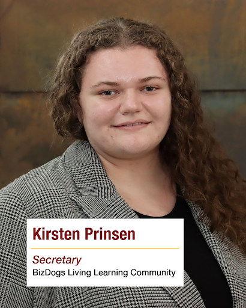

About Us
We are first year pre-business students who live together at Lake Superior Hall and take classes together. We are one of the LLC Communities at UMD.
What We Do
BizDogs LLC creates practical learning programs, networking opportunities, and leadership platforms to support professionals at every stage of their journey. We deliver events, mentorship, and resources designed for tangible career advancement.
Our organization is deeply committed to community building, bringing together driven professionals who share a passion for growth and collaboration. Through our various activities, we foster meaningful connections and create lasting professional relationships.
Our Mission
To connect talented individuals, provide value through high-quality events, and support lasting member success through collaboration and mentoring.
Learning & Development
We host regular group meetings focused on professional development, featuring workshops, skill-building sessions, and career advancement discussions. Throughout the year, we invite industry experts and guest instructors to share their knowledge and experience, offering valuable insights into current trends and best practices that members can immediately apply to their careers.
Community Engagement & Experiences

BizDogs actively participates in community service projects while organizing site visits to local businesses and facilities for hands-on industry exposure. We also host regular social gatherings, mixers, and team-building events. All of these activities—whether giving back to the community, exploring different industries, or connecting on a personal level—reinforce our core commitment to building strong professional networks based on trust, mutual support, and shared experiences.
Leadership Team

Sam Ashby
President
Sam leads the BizDogs, sets direction, and oversees all activities and meetings.

Caleb Cooley
Vice President
Caleb supports the president, helps coodinate activites, and steps in the guide the group.

Kirsten Prinsen
Secretary
Kirsten builds member engagement, manages records, meeting notes, and communication within the LLC.

Madi Welborn
Treasurer
Madi manages the organization's finances, budgeting, and tracks all income and expenses..